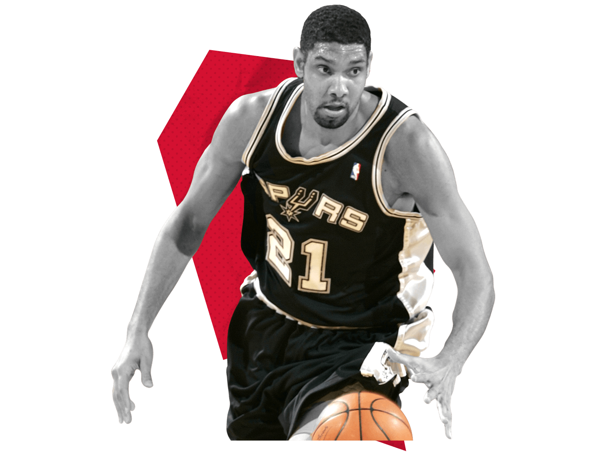

The power forward (PF), also known as the four, is a position in basketball. Power forwards play a role similar to centers. They typically play 'offensively' with their backs towards the basket and position themselves defensively under the basket in a zone defense or against the opposing power forward in man-to-man defense. The power forward position entails a variety of responsibilities, one of which is rebounding. Many power forwards are noted for their mid-range jump-shot, and several players have become very accurate from 12 to 18 feet (3.7 to 5.5 m). Earlier, these skills were more typically exhibited in the European style of play. Some power forwards, known as stretch fours, have since extended their shooting range to three-point field goals.
In the NBA, power forwards usually range from 6' 7" (2.01 m) to 6' 10" (2.08 m) while in the WNBA, power forwards are usually between 6′ 0″ (1.83 m) and 6′ 3″ (1.91 m). Despite the averages, a variety of players fit "tweener" roles which finds them in the small forward or center position depending on matchups and coaching decisions.[5] Some power forwards often play the center position and have the skills, but lack the height that is usually associated with that position.
Some of the most important qualities include:
Power forwards that are inducted in the Naismith Memorial Basketball Hall of Fame include Dirk Nowitzki, Karl Malone, Denise Curry, Dolph Schayes, Kevin McHale, Charles Barkley, Dennis Rodman, Elvin Hayes, Bob Pettit, Jerry Lucas, Dave Debusschere, Katrina McClain Johnson, Tim Duncan, and Kevin Garnett.
Jump to start